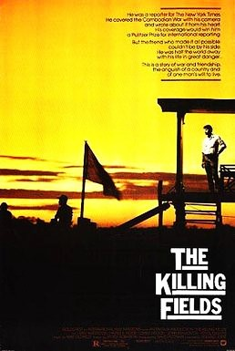

Roland Joffé
1984
141 minutes
This movie makes you wonder what it would be like to see this movie and recognize Sam Waterston from it before seeing a single episode of Law & Order. You'd probably half-assed watched bits of this film before when you were a kid, since it seemed to be endlessly played on cable television back in those days, but it always seemed more boring than the name might suggest. Robocop had a robotic cop in it, and even if a lot of the finer details went over your head, you could appreciate the carnage. In this film, much of the carnage is implied offscreen or implied when the aftermath is shown. Many of the more dramatic bits early involve trying to shoot a passport photo, which is not something even a weird, bookish kid like you had the patience for at age nine.
You never took the opportunity to correct not seeing this film even a few years later when you started listening to the Dead Kennedys and songs like "Holiday in Cambodia" were informing you about the horrors of Pol Pot. It was just a funny foreign name to chant toward the end of the song. Most of what you knew about the Vietnam war and its aftermath was about how the red communists beat us by "cheating", and any transgressions we did by bombing over the borders or interfering in the governments of other countries was justified by such cheating. You finally learned some of the finer details of all this in one of your ROTC classes on recent military history.
Your understanding of all this is still fairly rubbish, if you're honest with yourself. But at least you know when to stand up and sit down and mumble along with the prayers during mass the same way you knew to cheer when they announced that Kissinger finally died while you're at your weekly trivia night at the local bar. Sometimes you just go with it.
Time to choose something different: